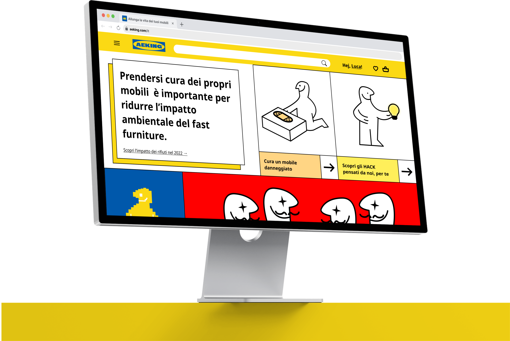
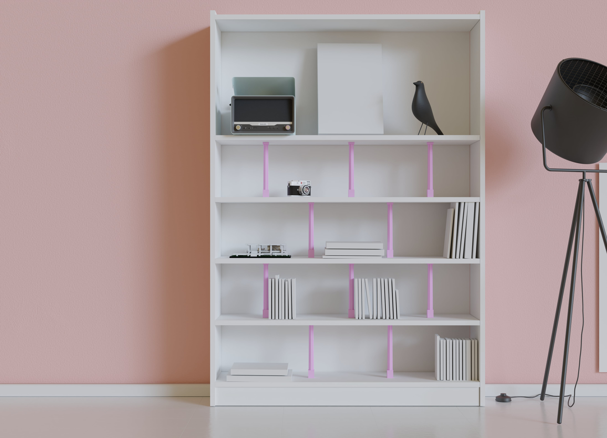
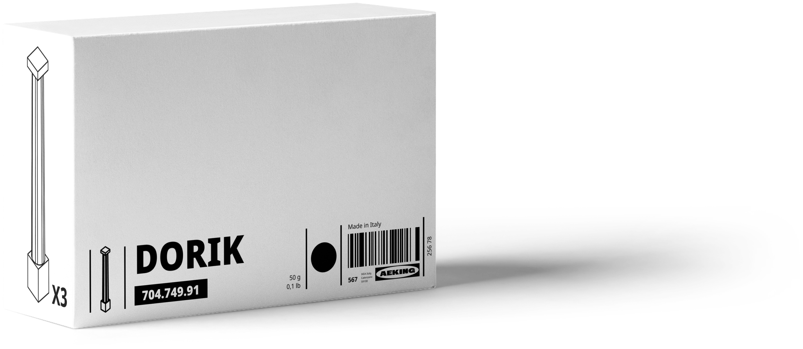

AEKING
2023AEKING is my bachelor’s graduation project — a fictional utopian scenario based on IKEA. The thesis explores how sustainable end-of-life flows can be created for IKEA furniture through community-led hacking practices, with the ultimate goal of avoiding landfill waste entirely.
To bring this concept to life, I designed a mock IKEA web platform, along with its visual identity and graphic guidelines. The platform allows users to creatively extend the lifespan of their furniture in multiple ways.
On the platform, users can take three types of actions: preserve, repair, or revalue old furniture. Each of these actions forms the basis of a distinct circular economy model, all designed to make these sustainable cycles economically viable and competitive.
During this project I was really attracted to the philosophy of "hacking" objects, especially the ones that are common, like the famous BILLY. DORIK, is a open source 3D hack which helps to avoid chipboards shelves from bending.



